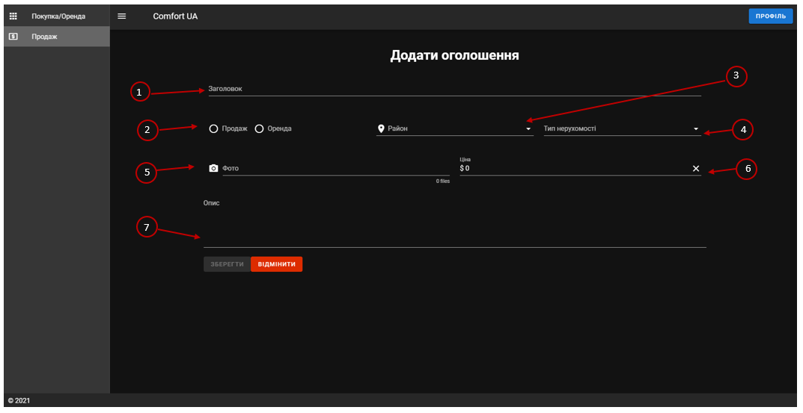

ДОВІДКА
До сайту оренди/продажу нерухомості «Comfort UA»
Шановний користувач, ви знаходитесь на сторінці довідкової системи по користуванню мережевим додатком «Веб-сайт продажу/оренди нерухомості Comfort UA». Пропонуємо ознайомитись з цим довідником для продуктивної роботи з сайтом.
Сайт оренди/продажу нерухомості «Comfort UA» - це безкоштовний, загальнодоступний веб-додаток для користувачів з метою придбання/взяття в оренду або продажу/здачі в оренду нерухомості.
При першому заході на сторінку, ви побачите сторінку такого змісту:

Розберемо загальні елементи графічного інтерфейсу:
1.Головна сторінка/сторінка покупки оренди. Це сторінка, яку бачить користувач при першому заході на сайт.
2.Сторінка продажу. Для користування цією сторінкою необхідно авторизуватися
3.Кнопка для авторизації до свого аккаунта. Розберемо функціонал цієї функції.
3.1
- Для заходу до особистого кабінету, необхідно заповнити обов’язкові поля: E-mail та пароль.
- Для створення власного кабінету, перейдіть на пункт «Реєстрація»
-Для створення власного аккаунта, заповніть поля «Ім’я», «E-mail», «Номер телефону» та «Пароль». Зверніть увагу, що всі поля обов’язкові, поле E-mail буде коректним при вводі адреси, яка закінчується на “*mail.***”, Номер телефону має містити як мінімум 6 значень (числового типу).
4.Кнопка виклику випливаючого меню. В цьому меню знаходяться посилання на сторінки «Покупка/оренда» і «Продаж».
5.Елементи для вводу даних для подальшого сортування результатів по необхідним критеріям. Розберемо кожен з них.
5.1 Поле «Тип нерухомості»
Дане поле являється полем типу «випадаючим список». Натиснувши на дане поле, у вас буде змога вибрати необхідний тип нерухомості.
5.2 Поле «Район»
Дане поле являється полем типу «випадаючим список». Натиснувши на дане поле, у вас буде змога вибрати необхідний район нерухомості. Виберіть колекцію районів, які вас цікавлять для сортування нерухомості.
5.3 Поле вибору оренди/покупки
Дане поле призначено для вибору сортування між покупкою і орендою нерухомості. Зверніть увагу, що можливий вибір ЛИШЕ однієї категорії
5.4 Поле сортування по ціні
Дане поле призначено для вибору діапазону ціни на нерухомість для подальшого сортування.
5.5 Поле для пошуку по назві
Дане поле призначено для пошуку нерухомості по заголовку її оголошення.
6. Місце для виводу результатів сортування.
Після створення власного аккаунта, у вас буде можливість зайти до особистого кабінету.
У особистому кабінеті ви побачите наступний інтерфейс:
1.Пункт «Мої оголошення». В даний момент ви знаходитесь на даній сторінці. На полі виводу (3) будуть знаходитись всі ваші активні оголошення.
2.Пункт «Профіль».
«Сторінка профіль»
На сторінці «Профіль» у вас є можливість змінити свої персональні дані шляхом заповнення полів «Ім’я», «E-mail» та «Номер телефону». Після вводу нових даних, натисніть «Зберегти».
Для виходу зі свого облікового запису, натисніть «Вихід»
Сторінка «Продаж»
Сторінка «Продаж» - сторінка для розміщення оголошень. Оголошення можуть розміщувати ЛИШЕ АВТОРИЗОВАНІ КОРИСТУВАЧІ.
Розберемо елементи графічного елементу:
1.Заголовок оголошення. Це основна інформація, яку буде бачити потенційний покупець, тому рекомендуємо вводити якомога більше змістовну і коротку інформацію.
2.Поля для вибору типу передавання нерухомості: продаж або оренда. Зверніть увагу, що можна обрати лише один тип.
3.Поле типу випадаючий список для вибору району, де знаходиться нерухомість. Зверніть увагу, що можна вибрати лише один район.
4.Поле типу випадаючий список для вибору типу нерухомості. Зверніть увагу, що можна вибрати лише один тип нерухомості.
5.Поле для завантаження фото.
5.1 Для виклику меню завантаження фотографій, клацніть на «Фото». Після чого виберіть фотографії, які необхідно розмістити в оголошенні.
«!» - Підказка, для вибору великої кількості фотографій слід зажати клавішу “Ctrl” і клацнути лівою кнопкою миші по кожному фото.
6.Поля для задання ціни нерухомості. Зверніть увагу, що ціна не може бути менше 1 та/або складатись з літер.
7.Поле для опису нерухомості. В цьому полі слід написати повну інформацію про нерухомість.